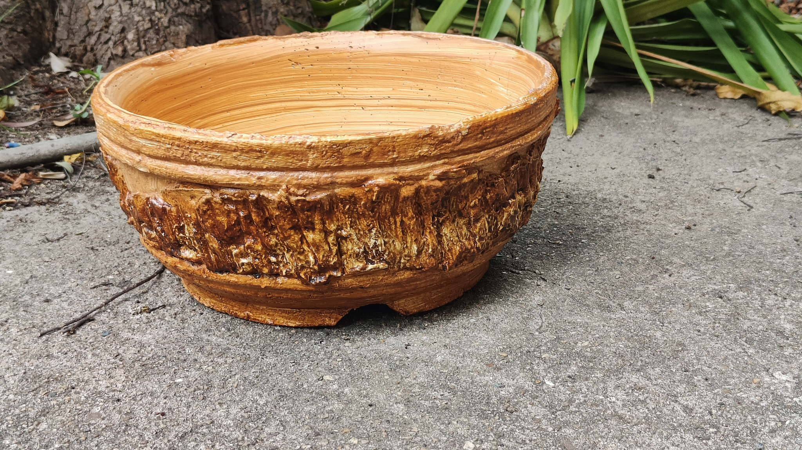
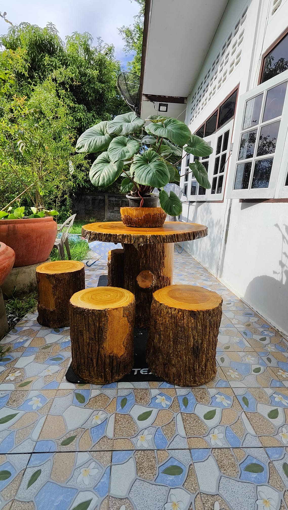
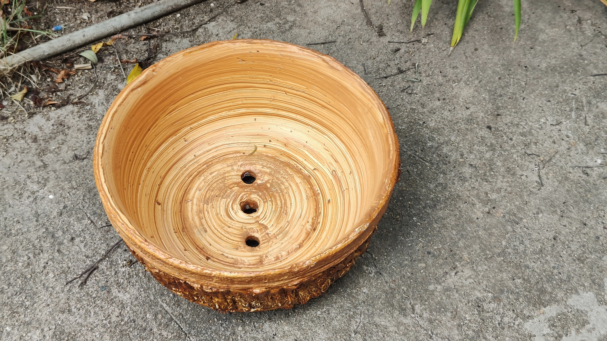
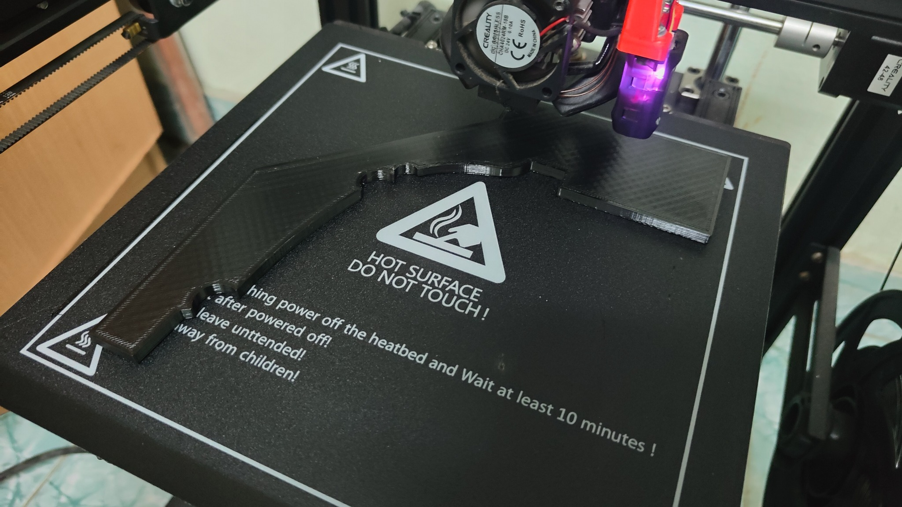
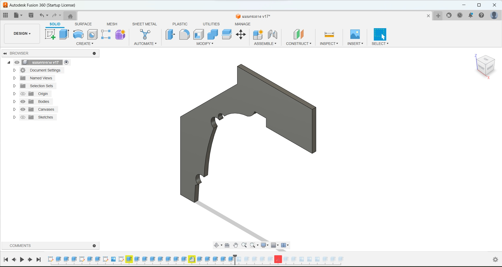
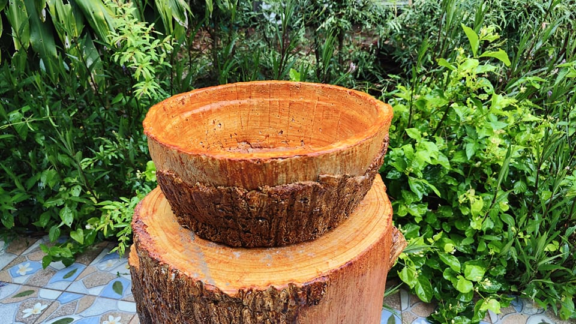

รายละเอียดและจุดเด่น
การทำกระถางปูนปั้นเป็นงาน DIY ที่ใช้ต้นทุนต่ำมากเพียงหลักสิบ (ค่าปูน ทราย และน้ำ) แต่สามารถเพิ่มมูลค่าด้วยดีไซน์ที่แปลกใหม่และเป็นเอกลักษณ์ จนสามารถนำไปวางจำหน่ายได้ในราคาหลักร้อย
ทำไมถึงน่าสนใจ?
- ต้นทุนต่ำ: ใช้วัสดุที่หาได้ง่ายในร้านก่อสร้างทั่วไป
- ความคงทน: กระถางปูนมีความแข็งแรง ทนแดด ทนฝน ใช้งานได้ยาวนาน
- อิสระทางการออกแบบ: สามารถปั้นรูปทรงได้หลากหลายตามจินตนาการ
- ตลาดรองรับกว้าง: เป็นที่ต้องการสำหรับคนรักต้นไม้และงานแต่งบ้าน
วิดีโอสอนการทำ
หากวิดีโอไม่แสดง คลิกเพื่อดูบน YouTube โดยตรง
คลังภาพผลงาน





